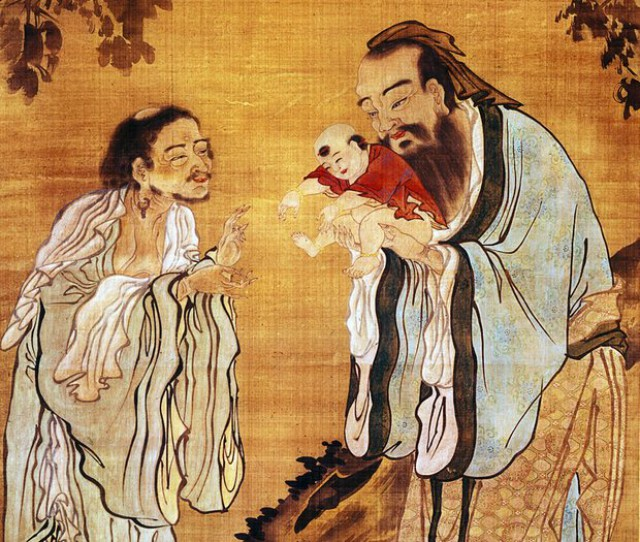

Становление древнекитайской философии, как и древнеиндийской, связано с ломкой традиционных общинных отношений, вызванной экономическим прогрессом, появлением денег и частной собственности, ростом научных знаний, в первую очередь в области астрономии, математики и медицины, которые создали благоприятную почву для духовных перемен. Примечательно, что и в Китае первыми «оппозиционерами» выступали аскетировавшие бродячие мудрецы, подготовившие в эпоху «Чжань го» («борющихся царств») наступление «золотого века» китайской философии. Хотя отдельные философские идеи можно обнаружить в еще более древних памятниках культуры, каковыми в Индии были Упанишады и отчасти Ригведа, а в Китае — «Ши цзин» («Канон стихов») и «И цзин» («Книга перемен»), философские школы здесь складываются одновременно — приблизительно в VI в. до н. э.Причем в обоих регионах философия, достаточно длительное время развивавшаяся анонимно, отныне становится авторской, связанной с именами Гаутамы-Будды, основателя джайнизма.
В “Ши цзи” (“Исторические записки”) Сыма Цяня (II-I вв. до н. э.) приводится первая классификация философских школ Древнего Китая. Там названо шесть школ: “сторонники учения об инь и ян” (натурфилософы), “школа служилых людей” (конфуцианцы), “школа моистов”, “школа номиналистов” (софисты), “школа законников” (легистов), “школа сторонников учения о дао и дэ” – даосистов.
Конфуцианство – философско-этическое учение мыслителя древнего Китая Конфуция (Кун-цзы) и его последователей, превратившееся на рубеже н.э. в религию. Источник конфуцианства – «Лунь-юй» («Беседы и суждения»), написанные последователями Конфуция. Конфуций жил в период социальной смуты и междуусобиц, основным для мыслителя стал вопрос: «Как восстановить порядок в китайском обществе?» Поэтому его интересовала чисто человеческая проблематика. Конфуций исходил из того, что человек есть самое ценное из «тьмы вещей».
В центре учения Конфуция стоит человек, его умственное и нравственное развитие и поведение. Главное внимание он уделяет вопросам воспитания идеального человека. В основе всех общественных и нравственных норм поведения и воспитания у Конфуция находится религиозный ритуал.
Целью конфуцианства являлось воспитание народа в духе уважения существующих порядков. Согласно конфуцианству, в обществе действует закон «жень», ниспосланный небом. Для усвоения этого закона человек должен соблюдать «ли» - нормы общественного поведения, традиционные обряды, поступать согласно своему общественному положению. С превращением конфуцианства в религию Конфуций был обожествлен. Конфуцианство отличается от многих религий отсутствием жречества, мистических элементов и сводиться к строгому выполнению предписанных обрядов. Основное содержание культа конфуцианства – сложившееся еще до конфуцианства – почитание предков: каждая семья, род имеют свой храм, где размещены символизирующие предков таблички «чжу», перед которыми расставляются жертвоприношения и совершаются обряды. Конфуцианство с его учением о незыблемом постоянстве порядков, разделение людей на высших и низших по воле неба использовали господствующие классы Китая.
Со II в. до н.э. конфуцианство стало официальной идеологией Китая, и это понятно, ибо главные мужи у Кун-цзы суть государственные чиновники. Во времена маоистской «культурной революции» конфуцианство, ставшее к тому времени ядром китайского менталитета, помогло сохранить традиционные духовные устои народа.
Основатель моизма Мо-цзы (479–400 гг. до н.э.) развивал идею естественного равенства всех людей и выступил с обоснованием договорной концепции возникновения государства, в основе которой лежит идея принадлежности народу верховной власти.
Взгляды Мо-цзы на человека отличает редкий для древности дух демократизма и широкого гуманизма.
Любовь в рамках семьи Мо-цзы считал узкой и эгоистичной. По его мнению человек способен на большее, при определенном настрое он может любить все чужие семьи и как представитель одного народа даже может любить и уважать все другие народы. Ради общего блага надо относиться ко всем другим людям как к себе, человечество может и должно быть единой семьей.Если у Конфуция ритуальный порядок исходит извне (небо), то Мо-цзы в качестве исходной основы взял внутренний мир отдельного человека. Именно, в его сердце добрые отношения зажигают чувство любви, которое в дальнейшем расширяет круг его действия. Если правитель и чиновники имеют искру такого чувства, то они будут стремиться не к войнам, а к миру. Так постепенно будет строиться союз государств, ищущих добра и счастья.
Как полемику против свойственного конфуцианцам подчеркивания роли семьи в качестве основной социальной единицы следует рассматривать идею всеобщей любви, выдвинутую Мо-цзы. Из всех идей Мо-цзы именно эта получила наибольшую популярность - ее в первую очередь имели в виду, когда упоминали о Мо-цзы начиная с древности и кончая последними десятилетиями. Отказавшись от идеала личности и перенеся все свои надежды на идеальное государство, Мо-цзы создал первую в Китае утопию.
Основателем даосизма, одного из наиболее влиятельных течений древнекитайской философской и общественно-политической мысли, считается Лао-цзы. Его взгляды изложены в произведении «Даодэцзин» («Книга о дао и дэ»).
Даосизм – одна из религий Древнего Китая, идейным истоком которой явилось философское учение, приписываемое полулегендарному мудрецу Лао Цзы («старый учитель»), автору «Книги о дао и дэ». Дао (путь) – основной закон бытия, вечное изменение мира, независимое ни от воли богов, ни от усилий людей. Поэтому люди должны подчиняться естественному ходу событий, их удел – «недеяние», пассивность. Свой идеал Лао Цзы выражал в призыве к слиянию с природой и возврату к прошлому, рисуемому им в идиллических тонах. К концу I тысячелетия до н.э. понятие «дао» и «увэй» получают мистический характер, т.е. начинают рассматривать как путь религиозного спасения, путь достижения абсолютного высшего счастья. Фигура основателя даосизма обожествляется, разрабатывается сложная иерархия божеств и демонов, возникает культ, в котором центральное место занимают гадание и обряды, «изгоняющие» злых духов. Пантеон даосизма возглавил Яшмовый владыка (Шан-ди), который почитался как бог неба, высшее божество и отец императоров («сынов неба»). За ним следовали Лао Цзы и творец мира – Пань-гу. Даосизм был представлен большим количеством сект, значительно расходившихся в трактовке частностей религиозного учения. На большинство сект сильное влияние оказал буддизм. В новое время даосизм в Китае был почти полностью вытеснен буддизмом, конфуцианством и отчасти христианством.
Эта школа возникла и оформилась в VI-II вв. до н.э. Основные идеи древнекитайского легизма изложены в трактате «Шан цзюнь шу» («Книга правителя области Шан»). Ряд глав трактата написан самим Гунсунь Яном, известным под именем Шан Ян. Он выступил с обоснованием управления, опирающегося на законы и суровые наказания. Критикуя распространенные в его время и влиятельные конфуцианские представления и идеалы в сфере управления (приверженность старым обычаям и ритуалам, устоявшимся законам и традиционной этике и т.д.), Шан Ян замечает, что люди, придерживающиеся подобных взглядов, могут «лишь занимать должности и блюсти законы, однако они не способны обсуждать вопросы, выходящие за рамки старых законов».
Легистские воззрения, кроме Шан Яна, разделяли и развивали многие видные представители влиятельной школы (Шэнь Дао, Шэнь Бухай, Хань Фэй и др.). Взгляды этой школы, помимо «Шан цзюнь шу», изложены также в целом ряде других древнекитайских источников, в частности в главе «Ясные законы» сводного памятника «Гуань-цзы» (IV–III вв. до н.э.), в книге «Хань Фэй-цзы» – работе крупного теоретика легизма Хань Фэя (III в. до н.э.), в разделе «Рассматривать все по нынешнему времени» компендиума древнекитайской мысли «Люй-ши чунь цю» (III в. до н.э.) и др. Во всех этих произведениях с теми или иными вариантами отстаивается необходимость жестоких законов как средства управления.
Начиная с III в. до н.э. происходит процесс слияния легизма и конфуцианства в единое учение, причем последнему нередко, по существу, отводилась роль привлекательного фасада и прикрытия. Подобный идейно-теоретический симбиоз различных концепций управления и правопонимания сыграл значительную роль во всем последующем развитии государства и права в Китае.
Инь и Ян в Китае – два начала (духа). Ян – это мужское, светлое и активное начало. Оно управляет небом. Инь – женское, темное и пассивное начало. Оно управляет землей. Ян и Инь могут действовать только в соединении своих сил. В IV-III вв. до н. э. развитие получает космогоническая концепция, связанная с силами ян и инь и пятью первоначалами, стихиями – усин. Отношение между первоначалами характеризовалось двумя особенностями: взаимопорожением и взаимопреодолением. Взаимопорожение имело такую последовательность первоначал: дерево, огонь, земля, металл, вода; дерево порождает огонь, огонь порождает землю, земля порождает металл, металл порождает воду, вода опять порождает дерево и т. д. Последовательность начал с точки зрения взаимопреодоления была другой: вода, огонь, металл, дерево, земля; вода преодолевает огонь, огонь - металл и т. д